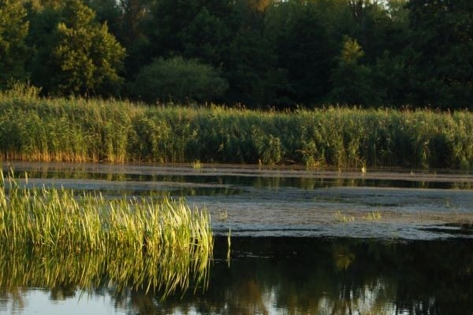
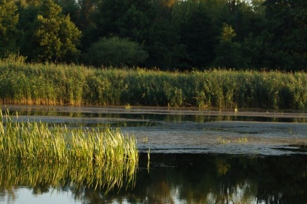
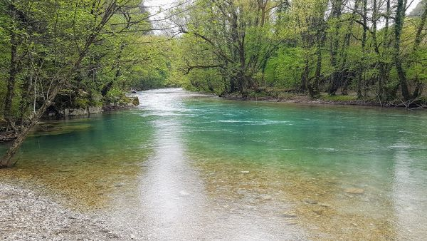

Nature Park
 

These ponds are within Rexburg's 15-acre Nature Park. Situated above the South Teton River near Henrys Fork, the park has walking paths, a skate park, and picnic and play areas in a tranquil environment away from traffic for enjoyable fishing. The main species of fish you can expect to find in Nature Park are Rainbow Trout and Yellow Perch.
Eagle Park

Eagle Park is the western most park in Rexburg's Teton River Corridor Park and Trail System. Eagle Park is a great place to enjoy a traditional camping experience, with 24 campsites for tent camping. Eagle Park has amenities such as drinkable water and bathrooms spread throughout the park. The Teton River flows the length of the park across from all the campsites. The main species of fish you can expect to find at eagle park are Rainbow Trout, Brown Trout, Cutthroat Trout, Mountain Whitefish, and Yellow Perch.